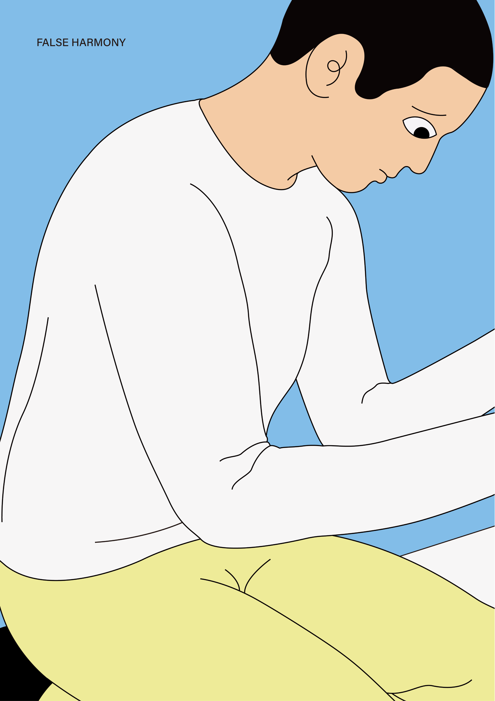
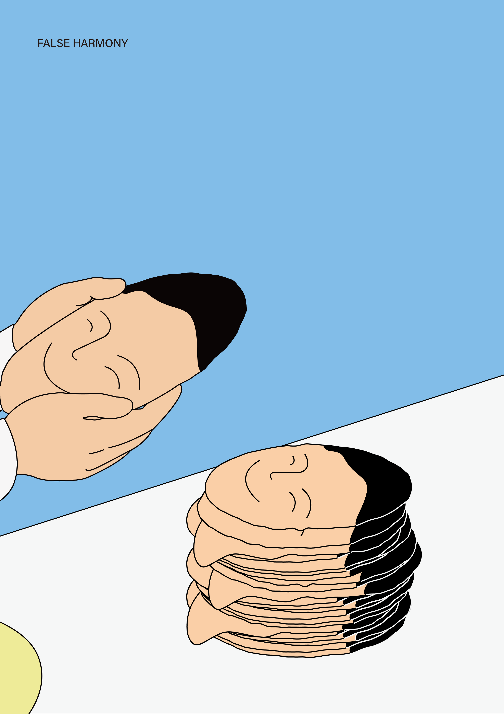

FalseHarmony
False Harmony is a two-poster series exploring the tension between outward calm and concealed emotional contradiction. Repeated faces become a visual metaphor for identity, concealment, and the pressure to maintain an appearance of harmony.

Concept
Harmony can appear calm on the surface while concealing repetition, pressure, and emotional instability underneath.
The two posters form a continuous visual sequence. In the first image, the figure observes and handles a face. In the second, faces are folded and accumulated, turning identity into something repeatable, replaceable, and increasingly distant from the individual.


Selected
JAGDA International Student Poster Award
2026